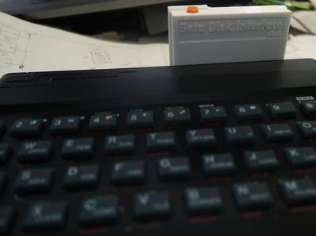
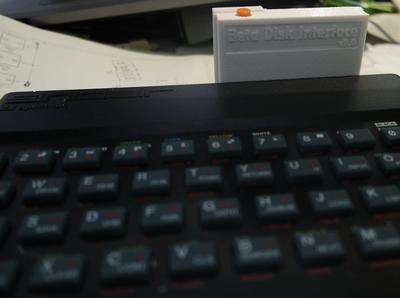
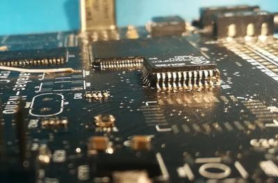
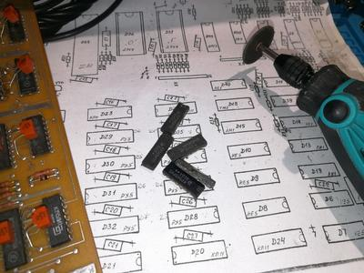
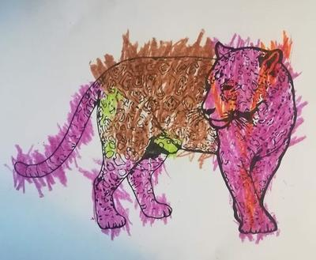

Бетадиск для ZX48 готов
Собрал бетадиск, сделал корпус. В TR-DOS выходит, осталось дисковод прицепить.

Собрал бетадиск, сделал корпус. В TR-DOS выходит, осталось дисковод прицепить.
Вышла новая (и очень обновленная) версия отличной программы для практически любых манипуляций с TAP-файлами. Теперь в ней, например, можно напрямую сейвы Элиты с реала писать через линейный вход сразу в TAP-ки!
Ой-ой-ой, так Jay and Silent Bob: Mall Brawl, как оказалось, не стилизация, а действительно игра для NES! Насмотрелся стрима и тоже прошел сейчас. Правда, с читами, а то там довольно хардкорно.
https://www.youtube.com/watch?v=DcbiTYGHzss
Вот так выглядит Z80 в корпусе QFP (с суффиксом FEC), запаянный на место, предназначенное под корпус LQFP (AEG). Чтобы он влез, пришлось все ноги загнуть вниз прямо у корня (ну и от души навалить припоя, конечно). А все потому, что AEG фиг где купишь. Получилось не так и плохо, зазор до платы всего миллиметр.
Это я Карабас-нано свой дособирал до матраса. Дальше оставалось поставить ПЗУ, но тут внезапно оказалось, что ноги у флэшей серий 29xxx/39xxx (которые я и хотел поставить) идут совсем не в том порядке, как у 27C512 (под которую сделана плата). Причем такая засада только в корпусе PLCC. Ведь в DIP чтоб заменить ПЗУ спектрума на микруху биоса из старой материнки, на последней достаточно было кинуть навесом пару перемычек — я так тест-ПЗУ себе делал, когда программатора не было. И это при том, что у них разное количество ног! Что мешало сделать совместимую распиновку в PLCC — непонятно.


Откопал у родителей раритет. Да, я был мажор с 3.5" дисководом. Правда, это был уже 1997-й год.

Это только корпус, он вскрыт, а сам диск зачем-то вынут. Но это и спасло дискетку, ведь все рабочие я продал вместе с дисководом когда увидел эмуляторы и решил, что реалы не нужны.
По напечатенному на ней телефону действительно давали справки, причем обо всём на свете. Например, однажды я звонил и спрашивал, почему программка
`` ORG 40000 LD A, #FF LD (16384), A RET ``
после ассемблирования M80 получается размером почти в 40 килобайт. Ведь о том, что в CP/M все программы обязаны начинаться с адреса #100, я тогда ещё не знал. В итоге ассемблер генерировал 39 с лишним килобайт NOP-ов перед 6 байтами собственно программы 😄
Ну вот, откладывал с завтраков себе на ZX Spectrum Next, откладывал, а оказалось, что надо было и с обедов откладывать. В прошлый Кикстартер их раздавали по £175, а в нынешний ломят аж £300.
Но не подумайте, что создатели барыги и хотят просто наштамповать по готовым формам и фотошаблонам еще таких же Некстов, как раньше. Нет, они его очень серьезно переработали. Например, передвинули Wi-Fi модуль в угол!
https://www.kickstarter.com/projects/spectrumnext/zx-spectrum-next-issue-2
Почему-то все скрывают, что главный инструмент при расширении памяти — это дремель! 😏
Особенно если микросхемы настолько на пузе, что кусачками не захватить.
С вами нерегулярная рубрика "Удивительные каналы на Ютубе".
Сегодня поговорим про ChibiAkumas. Его автор пилит видосы про программирование на асме подо всякое ретро. Причём, сегодня он, допустим, пишет что-то под Sinclair QL, назавтра под геймбой, а послезавтра для PDP11. Видео короткие и посвящены целиком одному аспекту - спрайты там, звук и т.д. Смотреть их регулярно совершенно невозможно, но как способ иногда поглядеть на какие-нибудь незнакомые архитектуры вполне заходит.
Кстати, ChibiAkumas - это не имя. Это название игры, выходившей в том числе и на ZX Spectrum - Chibi Akumas Episode 1. Про её разработку также были видео на канале.
https://www.youtube.com/watch?v=qZlOOAkaQzU
Вкратце о том, что такое клэшинг 😃
Nintendo M82 — это демонстрационное устройство, основанное на приставке NES. Поставлялось в магазины и устанавливалось в их торговых залах для того, чтобы потенциальные покупатели NES могли поиграть в игры и убедиться, что приставка им действительно нужна. Имеет 12 (!) слотов под картриджи.
Забавно, что M82 был выпущен очень рано - одновременно с самой NES - поэтому некоторые фичи поздних мапперов (среди которых даже гиперпопулярный MMC3) в нем не поддерживаются. Причина аппаратная - сигнал IRQ (прерывание) просто не заведен на разъемы для картриджей, из-за этого в играх не работает скроллинг фона. Какая связь между прерыванием и скроллингом? А примерно такая же, какая между прерыванием и мультиколором на Спектруме. Обычно на NES фон можно скроллить только весь целиком. Но маппер MMC3 умеет (анализируя шину адреса видеопроцессора) генерировать прерывание тогда, когда луч заканчивает отрисовку очередной строки. И если дать части экрана отрисоваться, а после этого перепрограммировать графический процессор на другую скорость скроллинга, то мы сможем создать, например, эффект параллакса, когда дальний фон скроллится медленней, чем ближний. Без умного маппера подобная синхронизация делается гораздо сложней.
В этом видео Бен Хек (Ben Hack) ремонтирует одно из таких устройств, чинит видеовыход и возвращает IRQ на место.
https://www.youtube.com/watch?v=yZEzioQP4W8
{kind=link}
{kind=link}
{kind=link}
{kind=link}